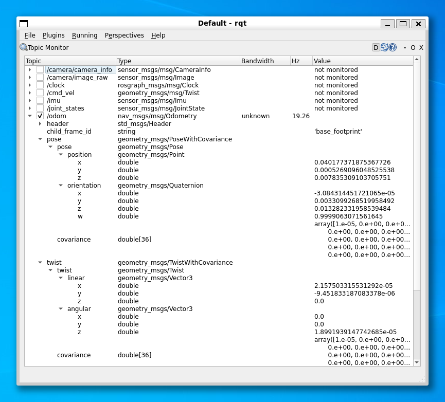

In Part 2 you will learn how to control a ROS robot's position and velocity from both the command line and through ROS Nodes. You will also learn how to interpret the data that allows us to monitor a robot's position in its physical environment (odometry). The things you will learn here form the basis for all robot navigation in ROS, from simple open-loop methods to more advanced closed-loop control (both of which you will explore).
Interpret the Odometry data published by a ROS Robot and identify the parts of these messages that are relevant to a 2-wheeled differential drive robot (such as the TurtleBot3).
Develop Python nodes to obtain Odometry messages from an active ROS network and translate them to provide useful information about a robot's pose in a convenient, human-readable way.
Implement open-loop velocity control of a robot using ROS command-line tools.
Develop Python nodes that use open-loop velocity control methods to make a robot follow a pre-defined motion path.
Combine both publisher & subscriber communication methods into a single Python node to implement closed-loop (odometry-based) velocity control of a robot.
Explain the limitations of Odometry-based motion control methods.
If you haven't done so already, launch your ROS environment now:
OPTION 1
OPTION 2
etc...
You should now have access to ROS via a Linux terminal instance. We'll refer to this terminal instance as TERMINAL 1.
Step 2: Make Sure The Course Repo is Up-To-Date
In Part 1 you should have downloaded and installed The Course Repo into your ROS environment. If you haven't done this yet then go back and do it now. If you have already done it, then it's worth just making sure it's all up-to-date, so run the following command now to do so:
TERMINAL 1:
cd~/ros2_ws/src/tuos_ros/&&gitpull
Then build with Colcon:
cd~/ros2_ws/&&colconbuild--packages-up-totuos_ros
And finally, re-source your environment:
source~/.bashrc
Warning
If you have any other terminal instances open, then you'll need run source ~/.bashrc in these too, in order for any changes made by the Colcon build process to propagate through to these as well.
Step 3: Launch a Waffle Simulation
In TERMINAL 1 enter the following command to launch a simulation of a TurtleBot3 Waffle in an empty world:
TERMINAL 1:
ros2launchturtlebot3_gazeboempty_world.launch.py
A Gazebo simulation window should open and within this you should see a TurtleBot3 Waffle in empty space:
In Part 1 we learnt about ROS Topics, and about how the teleop_keyboard node could be used to publish messages to a particular topic in order to control the velocity of the robot (and thus change its position).
Questions
Which topic is used to control the velocity of the robot?
When defining velocity commands for a ROS robot, there are six"fields" that we can assign values to: two velocity types, each with three velocity components:
Velocity Type
Component 1
Component 2
Component 3
linear
x
y
z
angular
x
y
z
These relate to a robot's six degrees of freedom, and the topic messages are therefore formatted to give a ROS Programmer the ability to ask a robot to move in any one of its six DOFs.
The three "axes" in the table above are termed the "Principal Axes." In the context of our TurtleBot3 Waffle, these axes and the motion about them are defined as follows:
As discussed above, a mobile robot can have up to six degrees of freedom in total, but this depends upon the robot's design and the actuators it is equipped with.
Our TurtleBot3 Waffles only have two motors. These two motors can be controlled independently (in what is known as a "differential drive" configuration), which ultimately provides it with a total of two degrees of freedom overall, as illustrated below.
When issuing Velocity Commands therefore, only two (of the six) velocity command fields are applicable: linear velocity in the x-axis (Forwards/Backwards) and angular velocity about the z-axis (Yaw).
Principal Axis
Linear Velocity
Angular Velocity
X
"Forwards/Backwards"
"Roll"
Y
"Left/Right"
"Pitch"
Z
"Up/Down"
"Yaw"
Maximum Velocity Limits
Keep in mind (while we're on the subject of velocity) that our TurtleBot3 Waffles have maximum velocity limits:
Let's take another look at all the topics that can be used to communicate with our robot:
ros2topiclist
Another topic of interest here is /odom. This topic contains Odometry data, which is also essential for robot navigation, giving us an approximation of a robot's location in its environment.
From the top menu select Plugins > Topics > Topic Monitor
Topic Monitor should then present you with a list of active topics which matches the topic list from the ros2 topic list command that you ran earlier.
Check the box next to /odom and click the arrow next to it to expand the topic and reveal four base fields.
Expand the pose > pose > position and orientation fields to reveal the data being published to the three position and four orientation values of this message.
Also expand the twist > twist, linear and angular fields to reveal the six values being published here too.

Next, launch a new terminal instance, we'll call this one TERMINAL 3. Arrange this next to the rqt window, so that you can see them both simultaneously.
Enter A a couple of times to make the robot rotate on the spot. Observe how the odometry data changes in Topic Monitor.
Questions
Which pose fields are changing?
Is there anything in the twist part of the message that corresponds to the angular velocity that is being published by the teleop_keyboard node in TERMINAL 3?
Now press the S key to halt the robot, then press W a couple of times to make the robot drive forwards.
Questions
Which pose fields are changing now? How does this relate to the position of the robot in the simulated world?
How does the twist part of the message now correspond with the linear velocity setting in TERMINAL 3?
Now press D a couple of times and your robot should start to move in a circle.
Questions
What linear and angular velocities are you requesting in TERMINAL 3, and how are these represented in the twist part of the /odom message?
What about the pose part of the message? How is this data changing as your robot moves in a circular path.
What are twist and pose actually telling us?
Press S in TERMINAL 3 to stop the robot (but leave the teleop_keyboard node running). Then, press Ctrl+C in TERMINAL 2 to close down rqt.
Let's look at the Odometry data differently now. With the robot stationary, use ros2 run to run a Python node from the tuos_examples package:
TERMINAL 2:
ros2runtuos_examplesrobot_pose
Now (using the teleop_keyboard node in TERMINAL 3) drive your robot around again, keeping an eye on the outputs that are being printed by the robot_pose node in TERMINAL 2 as you do so.
The output of the robot_pose node shows you how the robot's position and orientation (i.e. "pose") are changing in real-time as you move the robot around. The "initial" column tells us the robot's pose when the node was first launched, and the "current" column show us what its pose currently is. The "delta" column then shows the difference between the two.
# Estimated pose that is typically relative to a fixed world frame.
geometry_msgs/PoseWithCovariance pose
Pose pose
Point position
float64 x
float64 y
float64 z
Quaternion orientation
float64 x
float64 y
float64 z
float64 w
float64[36] covariance
As you can see above, there are two key components to Pose:
position: Tells us where our robot is located in 3-dimensional space. This is expressed in units of meters.
orientation: Tells us which way our robot is pointing in its environment. This is expressed in units of Quaternions, which is a mathematically convenient way to store data related to a robot's orientation (it's a bit hard for us humans to understand and visualise this though, so we'll talk about how to convert it to a different format later).
Pose is defined relative to an arbitrary reference point (typically where the robot was when it was turned on), and is determined from:
Data from the Inertial Measurement Unit (IMU) on the OpenCR board
Data from both the left and right wheel encoders
A kinematic model of the robot
All the above information can then be used to calculate (and keep track of) the distance travelled by the robot from its pre-defined reference point using a process called "dead-reckoning."
Quaternions use four values to represent the orientation of something in 3 dimensional space1, as we can observe from the structure of the nav_msgs/msg/Odometry ROS message:
Quaternion orientation
float64 x
float64 y
float64 z
float64 w
For us, it's easier to think about the orientation of our robot in a "Euler Angle" representation, which tell us the degree of rotation about the three principal axes (as discussed above):
θx, aka: "Roll"
θy, aka: "Pitch"
θz, aka: "Yaw"
Fortunately, the maths involved in converting between these two orientation formats is fairly straight forward (see here).
Recall from above however, that our TurtleBot3 can only move in a 2D plane (unfortunately, it can't fly!) and so, actually, its pose can be fully represented by just 3 terms:
x & y: the 2D coordinates of the robot in the X-Y plane
The fourth base field within the nav_msgs/msg/Odometry message is Twist:
# Estimated linear and angular velocity relative to child_frame_id.
geometry_msgs/TwistWithCovariance twist
Twist twist
Vector3 linear
float64 x
float64 y
float64 z
Vector3 angular
float64 x
float64 y
float64 z
float64[36] covariance
This might look familiar from earlier! This tells us the current linear and angular velocities of the robot. These velocities are set by messages published to /cmd_vel, but are then monitored by data coming directly from the robot's wheel encoders, and are provided here as a feedback signal.
Odometry data can be really useful for robot navigation, allowing us to keep track of where a robot is, how it's moving and how to get back to where we started. We therefore need to know how to use odometry data effectively within our Python nodes, and we'll explore this now.
Exercise 2: Creating a Python Node to Process Odometry Data¶
In Part 1 we learnt how to create a package and build simple Python nodes to publish and subscribe to messages on a topic (called /my_topic). In this exercise we'll build a new subscriber node, much like we did previously, but this one will subscribe to the /odom topic that we've been talking about above. We'll also create a new package called part2_navigation for this node to live in!
First, head to the src folder of your ROS2 workspace in your terminal and into the tuos_ros Course Repo:
cd~/ros2_ws/src/tuos_ros/
Then, use the create_pkg.sh helper script to create your new package:
./create_pkg.shpart2_navigation
Then navigate into the scripts folder of the new package using the cd command again:
cd../part2_navigation/scripts/
The subscriber that we will build here will be structured in much the same way as the subscriber that we built in Part 1.
As a starting point, copy across the subscriber.py file from your part1_pubsub package:
You'll need to add a new dependency to your package's package.xml file now. Below the <exec_depend>rclpy</exec_depend> line, add an execution dependency for nav_msgs:
Now we're ready to run this! Do so using ros2 run and see what it does:
ros2runpart2_navigationodom_subscriber.py
Having followed all the steps, the output from your node should be similar to that shown below:
[TODO: a gif]
Observe how the output (the formatted odometry data) changes whilst you move the robot around using the teleop_keyboard node in a new terminal instance (TERMINAL 3).
Stop your odom_subscriber.py node in TERMINAL 2 and the teleop_keyboard node in TERMINAL 3 by entering Ctrl+C in each of the terminals.
As we discovered earlier, the /cmd_vel topic is expecting messages containing linear and angular velocity data, each with an x, y and z component. When publishing topic messages in a terminal the commands can get quite long and complicated, but we can use autocomplete functionality to help us format the full command correctly.
In TERMINAL 3type the following, using the Tab key where indicated to invoke autocompletion...
First, type the text as shown below and then press the Tab key where indicated to complete the topic name for you:
ros2 topic pub /cmd_[TAB]
Then, type g and then press Tab again to format the rest of the message type for you:
ros2 topic pub /cmd_vel g[TAB]
The message data then needs to be entered inside quotation marks, type "l and then press Tab again to obtain the format of the message data:
You can use Tab to autocomplete lots of terminal commands, experiment with it - it'll save you lots of time!
Scroll back through the message using the Left key on your keyboard and then edit the values of the various fields, as appropriate.
First, define some values that would make the robot rotate on the spot.
Enter Ctrl+C in TERMINAL 3 to stop the message from being published.
What happens to the robot when you stop the ros2 topic pub command?
... it keeps on moving at the requested velocity!
In order to make the robot actually stop, we need to publish a new message containing alternative velocity commands.
In TERMINAL 3 press the Up key on your keyboard to recall the previous command, but don't press Enter just yet! Now press the Left key to track back through the message and change the velocity field values in order to now make the robot stop.
Once again, enter Ctrl+C in TERMINAL 3 to stop the publisher from actively publishing new messages, and then follow the same steps as above to compose another new message to now make the robot move in a circle.
Enter Ctrl+C to again stop the message from being published, publish a further new message to stop the robot, and then compose (and publish) a message that would make the robot drive in a straight line.
Finally, stop the robot again!
Exercise 4: Creating a Python Node to Make a Robot Move in a circle¶
Controlling a robot from the terminal (or by using the teleop_keyboard node) is all well and good, but what about if we need to implement some more advanced control or autonomy?
We'll now learn how to control the velocity of our robot programmatically, from a Python Node. We'll start out with a simple example to achieve a simple velocity profile (a circle), but this will provide us with the basis on which we can build more complex velocity control algorithms (which we'll look at in the following exercise).
In Part 1 we built a simple publisher node, and this one will work in much the same way, but this time however, we need to publish Twist type messages to the /cmd_vel topic instead...
In TERMINAL 2, ensure that you're located within the scripts folder of your part2_navigation package (you could use pwd to check your current working directory).
If you aren't located here then navigate to this directory using cd.
Create a new file called move_circle.py:
TERMINAL 2:
touchmove_circle.py
... and make this file executable using the chmod command (as we did in Part 1).
The task is to make the robot move in a circle with a path radius of approximately 0.5 meters.
Clearly, our work on the move_circle.py node isn't quite done. When we terminate our node we'd expect the robot to stop moving, but this (currently) isn't the case.
You may have also noticed (with all the nodes that we have created so far) an error traceback in the terminal, every time we hit Ctrl+C.
None of this is very good, and we'll address this now by modifying the move_circle.py file to incorporate a proper (and safe) shutdown procedure.
Return to the move_circle.py file in VS Code.
First, we need to add an import to our Node:
fromrclpy.signalsimportSignalHandlerOptions
You'll see what this is for shortly...
Then move on to the __init__() method of your Circle() class.
Add in a boolean flag here called shutdown:
self.shutdown=False
... to begin with, we want this to be set to False.
Next, add a new method to your Circle() class, called on_shutdown():
defon_shutdown(self):self.get_logger().info("Stopping the robot...")self.my_publisher.publish(Twist())# (1)!self.shutdown=True# (2)!
All velocities within the Twist() message class are set to zero by default, so we can just publish this as-is, in order to ask the robot to stop.
Set the shutdown flag to true to indicate that a stop message has now been published.
Finally, head to the main() function of the script. This is where most of the changes need to be made...
defmain(args=None):rclpy.init(args=args,signal_handler_options=SignalHandlerOptions.NO)# (1)!move_circle=Circle()try:rclpy.spin(move_circle)# (2)!exceptKeyboardInterrupt:# (3)!print(f"{move_circle.get_name()} received a shutdown request (Ctrl+C).")finally:move_circle.on_shutdown()# (4)!whilenotmove_circle.shutdown:# (5)!continuemove_circle.destroy_node()# (6)!rclpy.shutdown()
When initialising rclpy, we're requesting for our move_circle.py node to handle "signals" (i.e. events like a Ctrl+C), rather than letting rclpy handle these for us. Here we're using the SignalHandlerOptions object that we imported from rclpy.signals earlier.
We set our node to spin inside a Try-Except block now, so that we can catch a KeyboardInterrupt (i.e. a Ctrl+C) and act accordingly when this happens.
On detection of the KeyboardInterrupt we print a message to the terminal. After this, the code will move on to the finally block...
Call the on_shutdown() method that we defined earlier. This will ensure that a STOP command is published to the robot (via /cmd_vel).
This while loop will continue to iterate until our boolean shutdown flag has turned True, to indicate that the STOP message has been published.
The rest is the same as before...
... destroy the node and then shutdown rclpy.
With all this in place, run the node again now (ros2 run ...).
Now, when you hit Ctrl+C you should find that the robot actually stops moving. Ah, much better!
Over the course of the previous two exercises we've created a Python node to make your robot move using open-loop control. To achieve this we published velocity commands to the /cmd_vel topic to make the robot follow a circular motion path.
Questions
How do we know if our robot actually achieved the motion path that we asked for?
In a real-world environment, what external factors might result in the robot not achieving its desired trajectory?
Earlier on we also learnt about Robot Odometry, which is used by the robot to keep track of its position and orientation (aka Pose) in the environment. As explained earlier, this is determined by a process called "dead-reckoning," which is only really an approximation, but it's a fairly good one in any case, and we can use this as a feedback signal to understand if our robot is moving in the way that we expect it to.
We can therefore build on the techniques that we used in the move_circle.py exercise, and now also build in the ability to subscribe to a topic too and obtain some real-time feedback. To do this, we'll need to subscribe to the /odom topic, and use this to implement some basic closed-loop control.
Exercise 6: Making our Robot Follow a Square Motion Path¶
Make sure your move_circle.py node is no longer running in TERMINAL 2, stopping it with Ctrl+C if necessary.
Make sure TERMINAL 2 is still located inside your part2_navigation package.
Navigate to the package scripts directory and use the Linux touch command to create a new file called move_square.py:
TERMINAL 2:
touchmove_square.py
Then make this file executable using chmod:
TERMINAL 2:
chmod+xmove_square.py
Use the VS Code File Explorer to navigate to this move_square.py file and open it up, ready for editing.
In this session we've learnt how to control the velocity and position of a robot from both the command-line (using ROS command-line tools) and from ROS Nodes by publishing correctly formatted messages to the /cmd_vel topic.
We've also learnt about Odometry, which is published by our robot to the /odom topic. The odometry data tells us the current linear and angular velocities of our robot in relation to its 3 principal axes. In addition to this though, it also tells us where in physical space our robot is located and oriented, which is determined based on dead-reckoning.
Questions
What information (sensor/actuator data) is used to do this?
In the final exercise we explored the development of odometry-based control to make a robot follow a square motion path. You will likely have observed some degree of error in this which could be due to the fact that Odometry data is determined by dead-reckoning and is therefore subject to drift and accumulated error. Consider how other factors may impact the accuracy of control too.
Questions
How might the rate at which the odometry data is sampled play a role?
How quickly can your robot receive new velocity commands, and how quickly can it respond?
Be aware that we did all this in simulation here too. In fact, in a real world environment, this type of navigation might be less effective, since things such as measurement noise and calibration errors can also have considerable impact. You will have the opportunity to experience this first hand in the labs.
Ultimately then, we've seen a requirement here for additional information to provide more confidence of a robot's location in its environment, in order to enhance its ability to navigate effectively and avoid crashing into things! We'll explore this further later in this course.
Remember, the work you have done in the WSL-ROS environment during this session will not be preserved for future sessions or across different University machines automatically! To save the work you have done here today you should now run the following script in any idle WSL-ROS Terminal Instance:
wsl_rosbackup
This will export your home directory to your University U:\ Drive, allowing you to restore it on another managed desktop machine the next time you fire up WSL-ROS.


 !
!